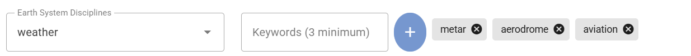

Setting up a recommended dataset
Learning outcomes
By the end of this practical session, you will be able to:
- create a new dataset with data policy 'recommended'
- add an access token to the dataset
- validate the dataset can not be accessed without the access token
- add the access token to HTTP headers to access the dataset
- add a custom license file hosted on your wis2box instance
Introduction
Data are shared on WIS2 according to the WMO Unified Data Policy which defines two categories of data.
core : data that is provided on a free and unrestricted basis, without charge and with no conditions on use
recommended : data that may be provided with conditions on use and/or subject to a license
Data that are shared as recommended:
- may be subject to conditions on use and reuse
- may have access controls applied to the data
- are not cached by WIS2 Global Caches
- must have a metadata record that includes a license URL
Downloading recommended data
Since the WIS Global Caches do not cache recommended data, you will not see notifications on the topic cache/a/wis2/<centre-id>/data/recommended/..
The data consumer must download data from the data server hosted by the data provider, using the canonical URL provided in the notifications on the topic origin/a/wis2/<centre-id>/data/recommended/...
In this practical session, you will create a new dataset with data policy 'recommended' using the dataset editor in wis2box-webapp. You will also learn how provide a self-hosted license and how to optionally add access control.
Aviation data in WIS2
For this exercise you are asked to create a dataset to share METAR data, a standard format for reporting aviation weather observations.
Aviation data on WIS2 should always be shared as 'recommended' in order to align with the regulations for sharing aviation data as specified by the International Civil Aviation Organization (ICAO).
Preparation
Ensure you have SSH access to your student VM and that your wis2box instance is up and running.
Make sure you are connected to the MQTT broker of your wis2box instance using MQTT Explorer. You can use the public credentials everyone/everyone to connect to the broker.
Ensure you have a web browser open with the wis2box-webapp for your instance by going to http://YOUR-HOST/wis2box-webapp.
Create a new dataset with data policy 'recommended'
Go to the 'dataset editor' page in the wis2box-webapp and create a new dataset.
For "Centre ID", use the same as you used in the previous practical sessions.
Select Template = 'other' to indicate you will not use a predefined template for the dataset:

Click 'CONTINUE TO FORM' to proceed.
For this exercise, please create a dataset for aviation METAR data;
- choose an appropriate 'Local ID' for the dataset, for example 'aviation-metar'
- provide a title and description for the dataset
- choose WMO Data Policy = 'recommended'

Note that when you selected WMO Data Policy = 'recommended', the dataset editor automatically added a field for 'License URL' which is mandatory for recommended datasets.
Next:
- Use
WIS2BOX_URL/data/aviation-license.htmlto point to a custom license file hosted on your instance, replacingWIS2BOX_URLwith the URL of your wis2box instance. - Select 'Sub Disciple Topic' = 'aviation/metar' to define the correct topic for this dataset.

About the license URL
The license URL associated with a recommended dataset informs data consumers for this dataset about the conditions of use of the data.
You can use a URL pointing to a license file hosted on your wis2box instance, or you can use a URL pointing to a license file hosted on an external website.
For this exercise, we will use a self-hosted license file. You will add the file 'aviation-license.html' to your wis2box instance later in this practical session to ensure the license URL is valid.
Since you selected Template = 'other' no keywords are pre-filled for the dataset. Add a minimum of 3 keywords relevant for the dataset:

Continue to fill the required fields for Spatial Properties and Contact Information. Click 'Validate form' to check that all mandatory fields are filled.
Since you selected Template = 'other', no dataset mappings are defined.
Please add the plugin for 'Universal data without conversion' and make sure to set the file-extension to .txt to match the METAR data files you will publish to this dataset later in this practical session:

Submit the dataset, using the previously created authentication token, and check that the new dataset is created in the wis2box-webapp.
Check MQTT Explorer to verify that you receive the WIS2 Notification Message announcing the new Discovery Metadata record on the topic origin/a/wis2/<your-centre-id>/metadata.
Review your new dataset in the wis2box-api
View the list of datasets in the wis2box-api by opening the URL WIS2BOX_URL/oapi/collections/discovery-metadata/items in your web browser, replacing WIS2BOX_URL with the URL of your wis2box instance.
Open the link of the dataset just created and scroll down to the 'links' section of the JSON response:

You should see a link for "License for this dataset" pointing to the URL provided in the dataset editor.
If you click on the link, you will get an error since the license file is not yet added to your wis2box instance.
Add the license file to your wis2box instance
Ensure the link for "License for this dataset" in the metadata of your recommended dataset works as expected.
Download this example aviation license file: aviation-license.html
About the example aviation license file
This is an example license file for aviation data. You may want to edit the file to include information relevant for your organization.
To upload this file, use the MinIO Console available at port 9001 of the wis2box instance, by going to a web browser and visiting http://YOUR-HOST:9001
The credentials to access the MinIO Console in the wis2box.env file are defined by WIS2BOX_STORAGE_USERNAME and WIS2BOX_STORAGE_PASSWORD environment variables.
You can find these in wis2box.env file as follows:
cat wis2box.env | grep WIS2BOX_STORAGE_USERNAME
cat wis2box.env | grep WIS2BOX_STORAGE_PASSWORD
Once you have logged in to the MinIO Console, upload the license file into base path of the wis2box-public bucket using the “Upload” button:

After uploading the license file, check if the file is accessible by visiting WIS2BOX_URL/data/aviation-license.html in your web browser, replacing WIS2BOX_URL with the URL of your wis2box instance.
Note
The web-proxy in wis2box proxies all files stored in the "wis2box-public" bucket under the path WIS2BOX_URL/data/
The link for "License for this dataset" included in the metadata of your recommended dataset should now work as expected.
Add an access token to the dataset
Log in to the wis2box-management container,
cd ~/wis2box
python3 wis2box-ctl.py login
From command line inside the container you can secure a dataset using the wis2box auth add-token command, using the flag --metadata-id to specify the metadata-identifier of the dataset and the access token as an argument.
For example, to add the access token S3cr3tT0k3n to the dataset with metadata-identifier urn:wmo:md:my-centre-id:core.surface-based-observations.synop:
wis2box auth add-token --metadata-id urn:wmo:md:my-centre-id:aviation-metar S3cr3tT0k3n
Exit the wis2box-management container:
exit
Publish some data to the dataset
Download the following example METAR data file to your local machine:
A_SAKO31RKSL290000_C_RKSL_20250729000055.txt
Then ingest this file into your dataset using the MinIO Console. To access the MinIO Console got to a web browser and visit http://YOUR-HOST:9001 and login the using the credentials defined in the wis2box.env file by the WIS2BOX_STORAGE_USERNAME and WIS2BOX_STORAGE_PASSWORD environment variables.
To ingest the file into your dataset, go to the wis2box-incoming bucket and create a new folder with the name of the metadata-identifier of your dataset and upload the example METAR data file into this folder using the “Upload” button:

Make sure that the folder-name is equal to the metadata-identifier for your dataset and check that you receive WIS2 data-notifications in MQTT Explorer, on the topic origin/a/wis2/<your-centre-id>/data/recommended/aviation/metar:

Troubleshooting
If you did not receive a notification after uploading you data, you can check recent logs of the wis2box-management container to troubleshoot the issue:
docker logs -n100 wis2box-management
Copy-paste the URL for the canonical-link from the WIS2 Notification Message into your web browser. The URL should look similar to this:
http://example.wis2.training/data/2025-07-29/wis/urn:wmo:md:int-wmo-example:aviation-metar/A_SAKO31RKSL290000_C_RKSL_20250729000055.txt
If you added the access token correctly to the dataset, you should not be able to access the data in your web browser, instead you see an ERROR 401 Authorization Required.
Add the access token to HTTP headers to access the dataset
In order to demonstrate that the access token is required to access the dataset we will reproduce the error you saw in the browser using the command line function wget.
From the command line in your student VM, use the wget command with the canonical-link you copied from the WIS2 Notification Message.
wget http://example.wis2.training/data/2025-07-29/wis/urn:wmo:md:int-wmo-example:aviation-metar/A_SAKO31RKSL290000_C_RKSL_20250729000055.txt
You should see that the HTTP request returns with 401 Unauthorized and the data is not downloaded.
Now add the access token to the HTTP headers to access the dataset.
wget --header="Authorization: Bearer S3cr3tT0k3n" <canonical-link>
Now the data should be downloaded successfully.
Remove the access token from the dataset
To remove the access token from the dataset, log in to the wis2box-management container,
cd ~/wis2box
python3 wis2box-ctl.py login
And use the command wis2box auth remove-token to remove the access token from the dataset, using the flag --metadata-id to specify the metadata-identifier of the dataset and the access token as an argument:
wis2box auth remove-token --metadata-id urn:wmo:md:my-centre-id:aviation-metar S3cr3tT0k3n
Make sure to replace urn:wmo:md:my-centre-id:aviation-metar with the metadata-identifier of your dataset.
Logout of the wis2box-management container:
exit
And verify that the access token has been removed by trying to download the data again using wget with the access token in the HTTP headers, or by trying to access the data in your web browser.
Access control is optional, for recommended datasets only
WIS2 specifies that recommended datasets may have access controls applied to the data. It is not mandatory to add access control to a recommended dataset and you may rely on the license URL only to inform data consumers about the conditions of use of the data. If do you apply access control you are responsible to share the access token to any data consumers that need to access this data.
If you apply wis2box auth add-token to a dataset with WMO Data Policy 'core', the Global Caches will report an error to the Global Monitoring as they can not download the data and your dataset will be considered to be non-compliant with the WIS2 Technical Regulations.
Conclusion
Congratulations!
In this practical session, you learned how to:
- create a new dataset with data policy 'recommended'
- add a custom license file to your wis2box instance
- add an access token to the dataset
- validate the dataset can not be accessed without the access token
- add the access token to HTTP headers to access the dataset